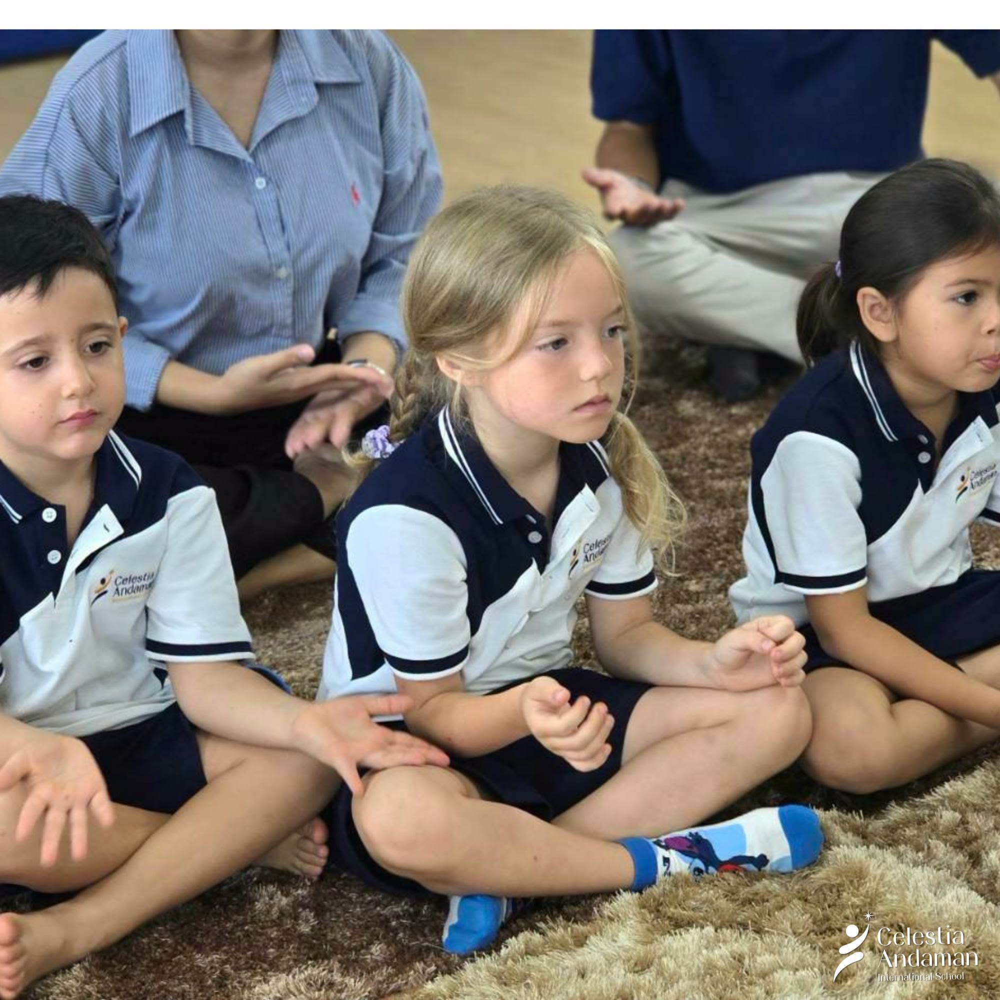

Academic excellence
Questions become foundations.
Play, conversation and guided inquiry connect early literacy, mathematics and understanding of the world.
Explore the learning journey →
British curriculum · Ages 2–7 · Thalang, Phuket
A close-knit international school where children build strong academic foundations through caring relationships, purposeful play, outdoor learning and mindful moments.
A clear first look
What learning feels like
Values become meaningful when families can see the practice behind them.
Play, conversation and guided inquiry connect early literacy, mathematics and understanding of the world.
Explore the learning journey →Children move, observe, collect, create and talk about what they discover in Phuket’s natural environment.
See learning in action →Attentive relationships and age-appropriate mindful moments help children feel safe, ready and included.
Understand our approach →A day with purpose
Rather than separating learning from childhood, the day moves between warm routines, focused teaching, collaborative play and experiences beyond the classroom.
Walk through school lifeA familiar welcome helps children settle and connect.
Questions lead into language, number and discovery.
Outdoor play and creative work turn ideas into experience.
Children revisit what they noticed, tried and learned.
Learning, not stock photography



Prototype media supplied from CAIS channels; final child-image permissions remain a production gate.

Events & announcements
Is CAIS right for your family?
See how relationships and a close-knit community shape learning.
“I need clear academic foundations.”Understand the British EYFS and Key Stage 1 learning journey.
“My child learns by doing.”Explore outdoor, creative, cultural and mindful experiences.
“We are moving to Phuket.”Ask about the right stage and arrange an on-campus or online conversation.
First article
Outdoor learning is not simply more time outside. It is a way to turn movement, questions and first-hand experience into language, mathematics, creativity and care.
Read the articleThe next useful step
A school visit is the clearest way to decide whether the approach and community feel right for your family.